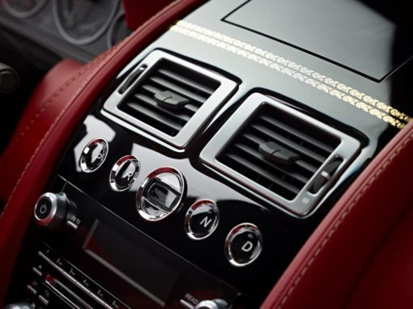

Norint, jog pilnai funkcionuotų kondicionavimo sistema, būtina periodiškai ją užpildyti šaldymo skysčių - freonu (kitaip šaldymo agendu - R134a). Automobilių techninės priežiūros specialistai pataria, jog šaldymo skystį reikėtų pildyti periodiškai, maždaug kas metus kai pasibaigia sezonas (arba prieš sezoną). Sezonas įvardijamas šiltasis metų laikas. Tačiau tam, kad po žiemos sezono sistema neužsistovėtų ir paskui nekiltų rizika, jog įjungiant sistemą užsikerta siurblys, būtina kelis kartus įjungti kondicionierių ir žiemą.
Kondicionavimo sistema pildant freonu pirmiausiai sudaromas vakuumas. Mūsų servise yra visa reikalinga įranga, su kuria iš šaldymo sistemos išsiurbiamas oras. Taip pat naudojame profesionalią įrangą, kuri tiksliai padeda nustatyti kiek tam tikram automobiliui reikia užpildyti šaldymo skysčio (nes kiekvieno automobilio techniniai parametrai yra skirtingi).
Atvykus į mūsų servisą galite profilaktiškai pasitikrinti kondicionavimo sistemos sandarumą. Mūsų specialistai konsultuoja dėl galimų gedimų, o jiems esant padeda efektyviai pašalinti.
Pas mus dirbantys specialistai pakonsultuos bei atliks profesionalią apžiūrą bei remontą.
Kondicionierių Pildymo Įkainiai:
|
 |